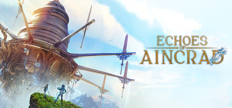

소드 아트 온라인 에코스 오브 아인크라드 혹평 논란 정리, 스팀 리뷰ㆍ메타크리틱으로 보는 지금 사도 될까
안녕하세요, 영원한도시입니다. 지난번 글에서는 콘솔이랑 PC 중에 뭘 먼저 살지 정리해 드렸었는데요, 막상 정식 출시되고 나서 스팀 리뷰란을 직접 열어보니 반응이 생각보다 시끄럽더라고요. 그래서 오늘은 출시 후에 어떤 지적들이 나왔는지, 그리고 지금 시점에 사도 되는 건지를 하나씩 짚어보려고 합니다.
아래 나오는 점수ㆍ비율은 전부 2026년 7월 20일 기준인데요, 스팀 리뷰나 메타크리틱 점수는 실시간으로 계속 바뀌는 거라 여러분이 이 글을 보는 시점엔 조금 달라져 있을 수 있다는 점만 감안해 주세요.

아인크라드를 배경으로 한 공식 키비주얼입니다. 정식 출시 이후 이 세계관을 향한 평가가 어떻게 갈렸는지 하나씩 보겠습니다.
이미지 출처: 스팀 상점 페이지 · 네이버 본문엔 받아서 재업로드 권장
1. 스팀 유저 반응부터 - '혼합적'에 걸쳐 있는 상황
저도 직접 스팀 상점 페이지에 들어가서 리뷰 비율을 확인해 봤는데요, 전체 언어 기준으로는 긍정 비율이 약 50%에 걸려 있습니다(3,093건 중 1,554건 긍정). 영어 리뷰만 추리면 53% 정도로 조금 더 높은데, 한국어 리뷰는 121건 중 30%만 긍정이라 오히려 더 박한 편이더라고요 — 국내 체감이 전체 평균보다 낮다는 뜻이니 이 부분은 참고하시는 게 좋을 것 같습니다.
50%를 겨우 넘긴 수준이고, 스팀 자체 평가 등급도 '혼합적(Mixed)'으로 떠 있습니다. 완전히 망한 점수는 아니지만, 그렇다고 다들 만족하는 분위기도 아니네요. 정확히는 "50% 아래로 떨어졌다"가 아니라 딱 절반을 조금 넘긴 상황이라고 보시는 게 맞습니다.
스팀 상점 페이지 리뷰 요약 화면이에요. '혼합적' 배지가 뜬 걸 직접 보시면 실감이 좀 다릅니다.
2. 메타크리틱은 유저가 더 박하게 줬습니다
메타크리틱은 플랫폼별로 점수가 따로 나오는데요, PS5가 64점(리뷰 39개), PC가 62점(리뷰 13개)으로 둘 다 '혼합적(Mixed or Average)' 구간입니다. 오픈크리틱 쪽 평론가 평균은 63점에 추천 비율 27%로, 메타크리틱보다 오히려 더 박하게 나왔더라고요.
그런데 재밌는 건 유저 스코어(역시 PS5 기준)인데요, 5.8점입니다. PS5 크리틱 리뷰 분포는 긍정 21%ㆍ혼합 74%ㆍ부정 5%로 대부분 '그저 그렇다'에 몰려 있는데, 유저 리뷰 분포는 긍정 43%ㆍ혼합 21%ㆍ부정 37%로 훨씬 크게 갈립니다.
| 평점 정리 (2026년 7월 20일 기준) | |||
|---|---|---|---|
| 구분 | 점수 | 리뷰 수 | 참고 |
| PS5 크리틱 | 64점 | 39개 | 긍정21%ㆍ혼합74%ㆍ부정5% |
| PC 크리틱 | 62점 | 13개 | - |
| PS5 유저 | 5.8점 | 68건 | 긍정43%ㆍ혼합21%ㆍ부정37% |
| 오픈크리틱 | 63점 | 67개 | 추천 27%ㆍ등급 Weak |
크리틱 점수는 대부분 60점대에 몰려 있지만 추천 비율은 27%로 낮은 편이라 '무난하게 채점했다'기보단 '박하게 보는 크리틱도 꽤 있다'가 더 정확한 것 같습니다. 유저 쪽은 부정 비율이 크리틱보다 훨씬 높아서, 실제로 플레이한 사람들 체감이 더 냉정하다고 볼 수 있겠네요.
메타크리틱 점수판을 직접 보시면 크리틱ㆍ유저 온도차가 한눈에 들어옵니다.
3. 구체적으로 어떤 지적들이 나왔나
게임메카 기사를 직접 찾아봤고, 해외 리뷰 몇 개도 같이 봤는데 공통적으로 나오는 지점이 몇 가지 있더라고요.
탐험은 생각보다 자유롭지 않다
사실 이 게임은 반다이남코 공식 소개에서부터 '오픈월드는 아니다'라고 못박아 둔 타이틀이거든요. 다만 층 단위로 구역이 나뉘어 있어서 자유롭게 돌아다니는 맛을 기대했던 분들껜 답답하게 느껴질 수 있고, 맵이랑 길찾기(매핑)가 불편하다는 의견도 리뷰에서 꽤 자주 보입니다.
스토리 진행 속도가 느리다
이야기가 늘어진다는 지적도 함께 나오고 있는데요, 리뷰를 보면 탐험 제약 다음으로 자주 언급되는 불만이 이 스토리 페이스입니다. 초반 진행이 더디다 보니 몰입하기 전에 지치는 유저들이 있는 것 같아요.
반복성
적이랑 퀘스트가 재활용되는 구간이 많아서, 플레이할수록 단조로워진다는 지적도 자주 나옵니다.
가격 대비 콘텐츠
정가 79,800원(디럭스 99,800원ㆍ얼티밋 129,800원) 대비 출시 시점 콘텐츠 분량(아인크라드 1ㆍ2층)이 부족하다는 의견도 나옵니다. 확장 DLC가 상위 에디션에 포함돼 있긴 한데, 정확히 언제 뭐가 추가되는지는 공식 안내에서 아직 확인되지 않습니다.
| 지적 포인트 | 핵심 내용 |
|---|---|
| 탐험 제약 | 층 단위 구역 게이팅ㆍ매핑 불편 |
| 스토리 속도 | 초반 진행이 더딤 |
| 반복성 | 적ㆍ퀘스트 재활용 구간 다수 |
| 가격 대비 콘텐츠 | 출시 시점 1ㆍ2층 분량 아쉬움 |
그리고 소소한 해프닝 하나 - 로그아웃 버튼
이건 사실 혹평이라기보단 해프닝에 가까운데요, 메뉴에서 '로그아웃'을 누르면 "지금은 로그아웃할 때가 아니다"라는 메시지가 뜨면서 안 꺼집니다.(ㅋㅋ) 사실 이건 원작 소드 아트 온라인의 데스 게임 설정을 재현한 의도적 연출이라고 해요 — 진짜 종료는 설정 메뉴 맨 마지막 탭에서 타이틀로 돌아가면 됩니다. 다만 이 안내가 따로 없다 보니 스팀 토론 게시판에 "못 끄겠다"는 글이 몇 번 올라오긴 했더라고요.
4. 그래도 이 게임만의 강점은 분명 있습니다
혹평만 있는 건 아닙니다. 원작 주인공 키리토가 아니라 직접 만든 오리지널 아바타로 아인크라드를 걷는다는 점이 신선하다는 반응이 많았습니다(오리지널 아바타로 플레이하는 방식 자체는 '페이탈 불릿'ㆍ모바일 '인테그럴 팩터' 같은 예전 작품에도 있었는데, 이번 작품은 그 방식을 콘솔ㆍPC 신작으로 다시 가져온 케이스라고 보시면 될 것 같아요).
세밀한 그래픽으로 아인크라드 세계관을 새로운 시점에서 보여준다는 점도 호평받았고, SAO 팬덤 쪽에서는 "최근 몇 년간 나온 SAO 게임 중 최고"라는 평가도 나오고 있습니다.
아인크라드를 새로운 시점에서 보여주는 실제 플레이 장면입니다.
5. 그래서, 지금 사도 될까 - 결론은 두 갈래로 갈립니다
여기까지 정리해보면 결국 반응이 갈리는 지점은 명확합니다. SAO 원작 팬덤이라 세계관이랑 오리지널 아바타 경험 자체에 가치를 두는 분이면, 지금 사도 크게 후회할 확률은 낮아 보입니다. 탐험 제약ㆍ스토리 속도 같은 단점보다 '아인크라드를 새로운 시점에서 다시 걸어본다'는 경험 쪽에 더 무게를 두실 테니까요.
반대로 순수 액션RPG 완성도로 냉정하게 채점하는 편이라면, 지금 시점은 조금 이르지 않나 싶습니다. 탐험 제약ㆍ스토리 속도 지적이 꽤 공통적으로 나오고 있고, 한국어 리뷰 체감도 평균보다 낮은 편이라(긍정 30%) 조금 더 지켜본 다음 판단해도 늦지 않을 것 같아요.